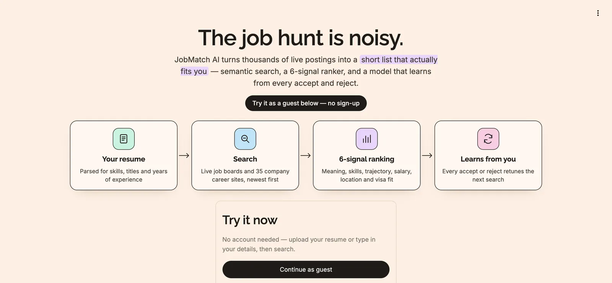

JobPilot
An AI job matcher that reads your resume, searches live job boards and 35+ company career sites, ranks every posting with semantic embeddings plus a 6-signal scorer, and learns from each accept or reject.

The idea
From thousands of postings to a short list that fits
Job boards sort by keyword and date, so you scroll through hundreds of roles that share a word with your resume but not much else. JobPilot works the other way round. It turns your resume into a profile, finds the postings closest to it in meaning, scores each one on six things that decide whether a job is actually a fit, and shows you why each job ranked where it did. Every time you accept or reject a job, it gets a little better at ranking for you.
- Resume PDF
- Parse
- Embed
- Retrieve top 500
- Hard filters
- 6-signal score
- Learned re-rank
- Your top 20
Live postings from job boards are fetched in parallel and join the ranking at the scoring step.
Step 1
How the resume is parsed
Everything downstream depends on a clean profile, so parsing is deliberately rule-based and predictable. No language model guesses at your experience. The parser pulls six things out of the PDF, and the app shows them back to you to check and edit before searching.
- Text extraction.
pdfplumberreads the PDF page by page and joins the text. spaCy’s English model is loaded alongside it for language processing. - Contact details. Regular expressions pick out the email, phone number and LinkedIn URL. The name is taken from the first line of the resume.
- Current title. The parser looks for a line near the top containing a title word like analyst, engineer or manager. If none is there, it takes the most recent role from the Experience section.
- Skills. The text is matched against a vocabulary of about 250 skills, such as python, tableau or a/b testing. The same vocabulary is used on job descriptions, so both sides are compared in the same words.
- Years of experience. These are calculated from the dates of each role, not from what the resume claims. Internships are skipped and overlapping jobs are only counted once.
- Summary. The first 250 characters of the resume are kept as a short summary. It gives the embedding some extra context about who you are.
Step 2
How recommendations are made
Ranking happens in stages: a fast, rough search narrows 46,000 postings to 500 candidates, strict rules throw out the ones you’d never take, and a detailed scorer orders what’s left.
1. Turn text into vectors (embeddings)
Each job is turned into a short piece of text, “{title} at {company}. Location: … Skills: … {first 400 characters of the description}”, and your profile into “Candidate for {target titles}. Skills: … {resume summary}”. Both go through the same model, all-MiniLM-L6-v2 from sentence-transformers, which turns any text into a list of 384 numbers (a vector). Texts that mean similar things end up with vectors that point in similar directions, even when they share no words: “built dashboards in Tableau” lands near “BI reporting”.
How close two vectors are is measured with cosine similarity: the smaller the angle between them, the more alike the two texts are. It runs from 1 (pointing the same way, same meaning) down to 0 (at right angles, unrelated).
2. Retrieve the 500 nearest jobs
Your profile vector is sent to ChromaDB, a vector database holding all 46k job vectors in an HNSW index. It returns the 500 closest jobs in milliseconds. If you leave target titles blank, JobPilot first suggests them: it finds the 150 postings nearest your resume, cleans their titles (dropping “Senior”, “II”, locations and shift notes), weights each title by similarity squared so the closest matches dominate, and keeps the top three that appear at least twice. A Business Consulting Analyst resume also gets Data Analyst and Technical Business Analyst.
At the same time, live search queries Adzuna, JSearch (Google for Jobs), Remotive and 35 company boards on Greenhouse, Lever and Ashby in parallel threads. Live postings are embedded on the spot with the same model, so their scores are directly comparable to indexed ones, and duplicates are dropped by a content hash (the live copy wins).
3. Hard filters
Some things aren’t trade-offs. A job is removed outright if it:
- hits one of your dealbreakers, which you write in plain English. “No 5+ years experience required” is parsed into a rule that reads the experience requirement out of each description; seniority words like “senior” or “director” are matched in the title only; and double negatives like “no companies that don’t sponsor” are recognised as requirements, not exclusions;
- pays less than 70% of your minimum salary at the top of its range;
- explicitly refuses visa sponsorship (“no H-1B”, “US citizens only”) when you need it.
4. The six signals
Every remaining job gets six scores between 0 and 1:
| Signal | Weight | How it’s calculated |
|---|---|---|
| Semantic fit | 33% | Cosine similarity, rescaled. Resume-to-job similarity with this model almost never leaves the 0.20–0.70 band, so that band is stretched onto 0–1. |
| Skill match | 28% | Share of the job’s skills you have, smoothed toward 50%: (overlap + 1) / (job skills + 2). A posting naming one skill you have scores 0.67, not a perfect 1.0. |
| Trajectory | 17% | 1.0 if the title matches a target role (understanding “ML” = “Machine Learning”), 0.2 if not. Multiplied by 0.55 if you’re clearly over- or under-qualified for its seniority. |
| Salary fit | 11% | 1.0 when the top of the range reaches your minimum, fading to 0 at 70% of it. |
| Location fit | 6% | 1.0 for a remote role or a preferred city, 0.2 otherwise. |
| Sponsorship | 6% | Only if you need it: 1.0 if the posting offers sponsorship, 0.5 if it doesn’t say. |
The final score is a weighted average. The important detail: a signal that can’t be judged is left out instead of scored as a miss. Most postings list no salary; scoring that as 0 would punish good jobs for missing data. Instead the remaining weights are renormalised to add up to 1 again, and the job card says “not scored”. Try it:
Score calculator
Untick a signal to see the others reweighted.
Personas are simply different starting weights. A career pivoter cares more about overall meaning than exact skill overlap; someone who needs a visa gets sponsorship weighted at 20%. Whichever persona you pick, the learner below fine-tunes on top of it.
Step 3
How the model learns from you
The hand-set weights above are a starting guess. What actually makes a job right for you only shows up in what you accept and reject, so JobPilot trains a small model per person.
The training loop
- Collect labels. Each accept is stored as a 1 and each reject as a 0, together with the job’s signal scores at the moment you saw it and the rank it was shown at. Skips are ignored.
- Wait for enough data. Training starts after 5 rated jobs, and only once there’s at least one accept and one reject. You can’t learn a boundary from one class.
- Standardise. A
StandardScalerputs every signal on the same scale (mean 0, standard deviation 1), so no signal looks important just because its numbers are bigger. - Fit a logistic regression. scikit-learn’s
SGDClassifier(loss="log_loss")learns one coefficient per signal, predicting the probability that you’d accept a job from its signal scores. - Re-rank. On your next search, every job is re-ordered by that predicted probability of acceptance.
- Save new weights. The size of each coefficient, normalised to sum to 1, becomes your new weight for that signal, so the scores on the job cards reflect what you’ve shown you care about.
The model is retrained on every search, from all your ratings so far. It is scoped to you and your persona: feedback given as a career pivoter doesn’t change your remote-first weights, and every guest gets their own user id, so one visitor’s ratings never train another’s ranking.
One way to see it is as a simple contextual bandit: the context is your profile plus the job’s signals, the action is showing the job at a rank, and the reward is your accept or reject.
What isn’t trained: the embedding model. all-MiniLM-L6-v2 is used as it comes, pre-trained by its authors on over a billion sentence pairs. With only a handful of ratings per person, fine-tuning a 22-million-parameter model would overfit badly; a 7-coefficient logistic regression learns quickly from five examples.
Concept
What is HNSW?
To find the jobs closest to your profile, the obvious method is to compare your vector with all 46,000 job vectors and sort. That works, but it gets slower with every job added. HNSW (Hierarchical Navigable Small World) is the index ChromaDB uses to answer the same question by looking at only a tiny fraction of them.
It builds a graph where each job is a node linked to its nearest neighbours, and stacks several layers of that graph:
- The bottom layer holds every job, each linked to its close neighbours.
- Each layer above holds a random, smaller subset, with links that cover longer distances, like express trains that stop at fewer stations.
A search starts at an entry point on the top layer and keeps hopping to whichever neighbour is closer to your profile until no neighbour is closer. Then it drops down a layer and continues from there. Each layer gets it nearer, so by the bottom layer it only explores a small neighbourhood to collect the closest results. The number of comparisons grows roughly with the logarithm of the number of jobs instead of the number itself.
The trade-off is in the name of the problem it solves: approximate nearest-neighbour search. HNSW can occasionally miss a true top match, in exchange for being dramatically faster. For JobPilot that’s fine. Retrieval only needs to get the right jobs into the 500 candidates; the detailed scorer decides the final order. The index is configured with hnsw:space = cosine, so “distance” means 1 − cosine similarity, the same measure used for the semantic signal.
Concept
What are NDCG and MRR?
Why we need them: to know whether a change to the ranking actually helped, we need a score for the ranking itself. Plain accuracy doesn’t work, because order matters: people mostly look at the top few results, so a good job at #1 is worth far more than the same job at #9. Both metrics use your feedback, counting every accept as a good result and every reject as a bad one.
NDCG@10: are the good jobs near the top?
NDCG looks at the top 10 results and gives credit for every job you accepted, with more credit the higher up it appeared. That total is then compared with the best possible ordering of the same jobs, so the score always lands between 0 and 1. A score of 1.0 means every job you liked was ranked above every job you didn’t.
We use it because it judges the whole top of the list at once. It’s how we compare two ways of ranking, for example semantic similarity alone against the full 6-signal pipeline, and see which one puts the right jobs first.
MRR: how soon do you see the first good job?
MRR only looks at the first job you accepted: 1.0 if it was #1, 0.5 if it was #2, 0.25 if it was #4. It answers a simple question: how far do you have to scroll before something is worth clicking?
It matters because first impressions decide whether people keep using a tool. If the first few results are all wrong, most people give up, however good the rest of the list is.
Try it: click a position to accept or reject it
The small number under each position is how much credit an accepted job gets there. The same three accepted jobs score 1.0 at the top and about 0.4 at the bottom.
Under the hood
Getting 46,000 jobs in
The “big data” half of the project is the ingestion pipeline that builds the index the app searches.
The raw posting dataset is loaded with Spark, locations are cleaned, salaries are cast safely (bad strings become nulls, not crashes), and each job gets a SHA-256 hash of title + company + location. A window function keeps only the earliest copy of each hash. Spark also runs the market analytics: top locations, companies, salary averages, remote share.
Jobs from the dataset and from the Adzuna and JSearch APIs are produced to a Kafka topic called jobs. A consumer drains it in micro-batches, writes each new job to SQLite (skipping duplicates), and embeds it into ChromaDB. Producers and the consumer never need to know about each other.
SQLite stores the full job records, your feedback and your learned weights. ChromaDB stores the 384-number vectors and the HNSW index. The app looks jobs up in Chroma by meaning, then fetches the details from SQLite by id.
Free API tiers allow about 200–250 calls a month. Live results are cached (1 hour for APIs, 3 for company boards, 6 for Remotive), uncached calls are capped per day and per session, and the free company boards always remain as a fallback.
Deployment
The app runs in Docker on Google Cloud Run, with API keys in Secret Manager and the pre-built database and index baked into the image. The first load used to take about 10 seconds, almost all of it importing PyTorch and spaCy and loading the model before the login screen could appear. Loading the model in a background thread while the login screen shows, caching the market charts and turning off Streamlit’s file watcher brought it to about 1 second.
Results
What I learned
More signals didn’t automatically mean better ranking
I benchmarked the full pipeline against the simplest possible ranker, semantic similarity alone, on 34 jobs I had rated myself:
Both put a job I wanted at #1, but semantic similarity alone ordered the rest of the top 10 noticeably better. My hand-set weights were a hypothesis, not a result. That finding is why the adaptive learner exists: weights are re-fitted from real feedback instead of my guesses. The Learning insights page in the app computes this benchmark live from each user’s own ratings, so every weighting change is checked against the semantic-only baseline.
Perceived speed is a product feature
Nobody waits ten seconds for a demo to load. The fix wasn’t a faster model; it was loading it at the right moment.
Free APIs need guard rails before they go public
One busy afternoon of visitors could have spent a month of API quota. Caching, per-day and per-session caps, and a key-less fallback mean the demo keeps working no matter how many people try it.
What I’d improve next
- Keep the sign of learned weights. New weights come from the size of each coefficient, so a signal that predicts rejection still gains weight. Using signed coefficients (or ranking only by predicted probability) would fix that.
- Fine-tune the embeddings on accept/reject pairs pooled across users once there’s enough data.
- Durable storage. Cloud Run’s filesystem resets on restart; Postgres with pgvector would keep live-added jobs and usage counters.
- More career sites. Workday, iCIMS and Taleo boards aren’t supported yet.
Search by meaning, filter by rules, score with reasons, and let feedback decide the weights.